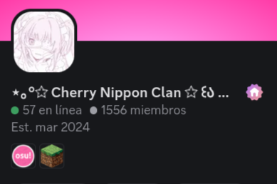

﹌﹌﹌﹌﹌﹌﹌﹌﹌﹌﹌﹌﹌﹌﹌⋆୨♡୧⋆﹌﹌﹌﹌﹌﹌﹌﹌﹌﹌﹌﹌﹌﹌

_Hiragana _ひらがな
46 caracteres · la base del idiomaAquí empieza todo ♡ El hiragana son los primeros sonidos del japonés: las sílabas con las que se escriben las palabras de siempre y las partículas de cada frase. Apréndelo con la tabla y luego ponte a prueba con Rie ✧
﹌﹌﹌﹌﹌﹌﹌﹌﹌﹌﹌﹌﹌﹌﹌⋆୨♡୧⋆﹌﹌﹌﹌﹌﹌﹌﹌﹌﹌﹌﹌﹌﹌

_Katakana カタカナ
Palabras extranjeras · nombresEl segundo alfabeto, con los mismos sonidos pero otra forma ⋆ Lo verás en menús, anime y en palabras prestadas como コーヒー (café). Cuando ya domines el hiragana, este se aprende mucho más rápido.
﹌﹌﹌﹌﹌﹌﹌﹌﹌﹌﹌﹌﹌﹌﹌⋆୨♡୧⋆﹌﹌﹌﹌﹌﹌﹌﹌﹌﹌﹌﹌﹌﹌

_Kanji 漢字
Nivel N5 · el primer paso hacia el JLPTLos caracteres que dan significado a las palabras. Empezamos por el nivel N5, los kanji más básicos y más usados del día a día. Con el kana ya te será más fácil leerlos ✧
﹌﹌﹌﹌﹌﹌﹌﹌﹌﹌﹌﹌﹌﹌﹌⋆୨♡୧⋆﹌﹌﹌﹌﹌﹌﹌﹌﹌﹌﹌﹌﹌﹌

Aun no te unes a nuestro servidor de Discord?

Mis redes
﹌﹌﹌﹌﹌﹌﹌﹌﹌﹌﹌﹌﹌﹌﹌⋆୨♡୧⋆﹌﹌﹌﹌﹌﹌﹌﹌﹌﹌﹌﹌﹌﹌
Zona de logs
- 1. Comm. ✓
- Index mejorado y tabla kanjis agregado ✓
- Centralizacion fix ✓
- Practica de kanjis agregada ✓
- Optimizacion de imagenes ✓